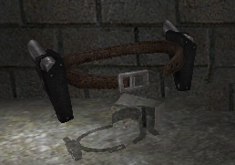
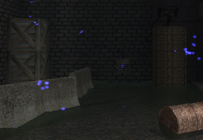
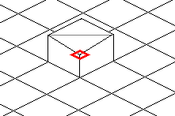

Tout d'abord, bienvenue dans mon premier tutoriel !
Assault Cube est un jeu en ligne, gratuit et en 3D, très similaire à Counter Strike. Il était connu dans le passé sous le nom d'Action Cube. Globalement, il y a deux factions dans le jeu : les RVSF (bleus) et les CLA (rouges). Il n'y a aucune différence entre les deux camps, ils servent juste à délimiter deux "équipes" distinctes, les joueurs apparaissant au hasard dans un camp ou l'autre au début de la partie. Assault Cube se joue majoritairement en ligne, mais il est possible de joueur seul contre des bots, dont l'IA est sous-développée.
Une particularité que j'adore avec Assault Cube, c'est son éditeur. Je le trouve assez puissant, et très simple d'utilisation ^^ . Nous nous y intéresserons donc durant ce tutoriel !
Nous allons dans ce chapitre télécharger Assault Cube, l'installer puis le lancer. Nous verrons globalement à quoi ressemble l'éditeur et de quoi il est capable.
Assault Cube est un jeu en ligne, gratuit, qui doit être téléchargé pour pouvoir être joué. Commencez par vous rendre sur le Site Officiel d'Assault Cube, et cliquez sur le lien de votre OS.
Le téléchargement devrait durer quelques minutes (environ 40 Mo). N'hésitez pas à télécharger la mise à jour.
Une fois le téléchargement terminé, lancez l'installeur. Suivez les étapes de l'installation. C'est pas compliqué, il y a juste à cliquer sur Suivant > Suivant > Suivant > Terminer. Si tout s'est bien passé, l'icône d'Assaut Cube est présente sur votre bureau.
Maintenant, retenez votre souffle. Comptez mentalement jusqu'à dix puis double-cliquez sur l'icône d'Assault Cube. :-°
Au lancement, vous devriez avoir un insupportable chargement. Soyez rassuré, la durée du chargement n'est longue que la première fois que vous lancez Assaut Cube. La prochaine fois, il sera plus court. :)
Et là, sous vous yeux ébahis, vous voyez l'interface d'Assault Cube.
C'est ça l'interface d'Assault Cube ? Où est le menu ?
Il n'y en a pas ! Ou plutôt si, mais caché. Il vous suffit d'appuyer sur Echap pour voir le menu s'afficher. Bon, c'est vrai que ça ressemble plus à un menu "Pause" qu'à un menu principal, mais bon.
Pour entrer en mode "éditeur", il vous suffit d'appuyer sur "E" durant le jeu. C'est tout !
Sauf que là, vous êtes sur une carte déjà faite. Nous on veut en faire une nouvelle ! Pour cela, il vous suffit de retourner dans le menu (Echap), cliquer sur Editing, puis Map Operations et de choisir Newmap (128x128 cubes - recommended).
Alors, une nouvelle carte vide est chargée :
Voilà, vous savez maintenant charger une carte vierge sur Assault Cube.
Désormais, nous allons détailler rapidement comment fonctionne cet éditeur.
Vous pouvez vous déplacer dans cette carte vide avec les touches WSAD ou les touches directionnelles. Pour regarder autour de vous, bougez votre souris. Vous pouvez faire un "bond" verticalement avec la touche Espace et baisser la vue avec Shift.
Vous remarquerez qu'au centre de l'écran, il y a un viseur. C'est où se trouve votre curseur. Vous voyez aussi que là où pointe le viseur, il y a un carré blanc. En faisant un clic gauche sur ce carré, vous le sélectionnez, et il devient rouge. Vous pouvez aussi sélectionner plusieurs carrés en faisant un cadre de sélection (laissez appuyé le clic gauche).
Le viseur pointant sur un carré.
Ne vous préoccupez pas pour le moment du petit carré rouge qui se trouve sur le coin du carré. Il nous servira plus tard. Nous comprenons en voyant cette interface que les mondes dans Assault Cube sont divisés en petits carrés. J'appellerai par la suite ces petits carrés les "blocs". Je vous conseille de faire de même pour que vous me suiviez bien ;) .
Si vous faites un clic droit n'importe où, le menu Editing apparait ; ne vous préoccupez pas de ce qu'il contient, retenez juste que c'est depuis ce menu que nous ferons 80% des choses : ajouter des objets, lumières, des sons, et effectuer des manipulations dans notre carte.
Nous savons désormais comment lancer Assaut Cube et créer une nouvelle carte vierge. Nous savons aussi comment sélectionner des carrés (que nous appellerons "blocs") et comment se rendre dans le menu "Editing", où nous passerons la plupart de notre temps.
Le chapitre suivant sera consacré aux techniques de bases d'Assaut Cube.
Nous allons en premier lieu apprendre à monter et abaisser les blocs. Si vous ne vous souvenez pas ce que sont les blocs, ce sont les petits carrés qu'il y a par-terre et sur le plafond. Le bloc où se trouve votre curseur est entouré de blanc.
Commencez par sélectionner un bloc (cliquez dessus). Laissez le curseur baissé vers le sol et tournez la molette de votre souris vers le haut. Le bloc s'élève alors. Si vous tournez votre molette vers le bas, le bloc redescendra.
Sur cette image, un bloc qui à été élevé.
Essayez maintenant d'élever toute une rangée de blocs, en faisant un cadre de sélection (gardez le clic gauche enfoncé).
Elever et abaisser le plafond
Maintenant, nous allons nous occuper de faire de même avec le plafond : par ailleurs, vous n'avez même pas besoin de sélectionner un bloc du plafond ; il vous suffit de laisser votre sélection au sol, d'orienter la caméra vers le haut et de bouger la molette de la souris !
Sur cette image-là, une portion du plafond abaissé.
Question, prof, si on veut faire un mur, il nous suffit de monter le sol et descendre le plafond jusqu'à ce qu'ils se rejoignent ?
Non, car dans ce cas, vous obtiendrez ça :
En effet, le sol et le plafond ne peuvent pas se rejoindre, il y aura toujours un trou entre les deux. Essayez, vous verrez.
Mais alors, on ne peut pas faire de mur ?
Bien sur que si, mais ce n'est pas la technique appropriée. Pour créer un mur, sélectionnez le ou les blocs et appuyez une fois sur la touche "F". Pour changer un mur en bloc normal, appuyez sur "G". Ainsi, on peut faire un mur sans problème, ou un pilier :
Les coins
Nous allons essayer de faire quelque chose : Déplacez vous jusqu'au coin de la carte et élevez les blocs de cette manière, de sorte à créer une sorte de "banc" :
Maintenant, sélectionnez un des coins du banc et appuyez sur "K". Le coin sélectionné est alors "scié", ce qui rend le banc moins carré. Vous pouvez aussi faire cela au coin du mur, au-dessus du banc :
Pour annuler un bord (pour retrouver l'angle à 90 degrés), appuyez sur "G".
Maintenant que vous connaissez les bases du mapping, nous allons voir des commandes de bases de la boite de dialogue.
Mais qu'est-ce qu'au juste que la boite de dialogue ?
C'est une fonction qui vous permet, en écrivant une commande sous la forme / votreCommande de faire certaines choses dans l'éditeur. Pour activer cette fameuse boite de dialogue, il vous suffit d'appuyer sur la touche "T". Alors, en bas à gauche, le texte que vous écrirez s'affichera.
Quelques commandes utiles
Voici une liste de commandes que vous pourrez entrer ainsi que leurs explications. Je ne vous donne que les commandes de bases pour ne pas vous embrouiller, nous en verrons des plus complexes plus tard.
- /newmap x : Cette commande permet de créer une nouvelle carte vierge. Cela revient à faire Clic droit > Map operations > Nouvelle carte. Remplacez x par la taille de la carte (compris entre 6 et 12, 6 étant tout petit et 12 étant immense).
- /savemap x : Cette commande permet de sauvegarder la carte actuelle. Remplacez x par le nom que vous voulez, par exemple : /savemap carte_de_test
- /mapmsg "x" : Quand vous chargerez la carte, il y aura un message qui s'affichera. Mettez par exemple "Carte créée par machin". Remplacez x par le message. N'oubliez pas de mettre des guillemets autour du message.
- /fullbright x : Si vous chargez une carte mais qu'il n'y a aucune lumière, elle sera toute noire. Cette commande remplit le niveau d'une lumière ambiante. Remplacez x par 1 pour l'activer et par 0 pour désactiver le fullbright.
Par exemple, si j'écris : /mapmsg "Bienvenue sur la nouvelle carte de Bekatro ! :)" Il y aura ce message qui s'affichera au chargement de la carte. Si par contre je mets dans la boite de dialogue : /newmap 8, une nouvelle carte de taille 8 se crée.
Facile, non? ^^
Pour charger une carte déjà enregistrée, faites Echap > Singleplayer > Empty map > Show all maps > Votre carte. Vous retrouverez ainsi les cartes que vous avez modifiées auparavant et sauvegardées grâce à la commande /savemap.
Vous n'en avez pas un peu mal à la tête de ces cartes vides qui ont des textures horribles répétées des milliards de fois ? Personnellement, je préfère les niveaux bien texturés !
Nous allons donc apprendre à... texturer nos niveaux ! (Histoire que le joueur ne se dise pas "Oh mon dieu, c'est quoi ces textures ??" en entrant dans la partie :lol: ).
Nous allons commencer par parler théorie. Déjà, pour faire simple...
Qu'est-ce qu'une texture ?
Une texture, c'est une image qui est répétée plusieurs fois pour "colorier" le monde du Jeu Vidéo, mais aussi de la 3D, du dessin, etc. Dans un fichier, il y a généralement plusieurs textures. On aura par exemple dans un fichier :
Une texture d'herbe
Une texture de mur
Une texture de porte en bois
Une texture de sable
...
Généralement, dans un fichier de texture, il y a beaucoup plus de textures que ça :lol: . Retenez en clair que sur nos murs, sols et plafonds, on applique des images qui sont sauvegardées dans un fichier. Ce fichier, rassurez-vous, est déjà inclus dans l'éditeur ; et vous n'avez qu'à appuyer sur certaines touches pour changer la texture des blocs souhaités.
Alors, on met ça en pratique ?
Créez une nouvelle carte sur Assault Cube. Vous remarquez qu'il y a une texture différente sur les murs, le sol et le plafond. On peut donc appliquer des textures sur le sol, les murs et le plafond.
Et comment fait-on ?
C'est assez délicat, regardez cette image :
Insérer et Supprimer : Ces touches-là font varier les textures du sol.
Flèche et Fin : Ces touches-là font varier les textures des murs.
Page suivante et Page précédente : Ces touches-là font varier les textures du plafond.
Et puis, cas particulier, les touches suivantes font varier les textures de la partie haute d'un mur. Explications :
Sur cette image, les parties entourées de rouge et de bleu font partie du même bloc. Comme la partie rouge vient du plafond, j'ai utilisé les touches 4 et 7, tandis que la partie bleue vient du sol, alors j'ai utilisé les touches Home et End.
C'est une notion à assimiler qui est importante, par exemple lorsque vous ferez des fenêtres. N'hésitez pas à relire cette partie-là si besoin est.
Mettons cela en pratique
Essayez par exemple de créer une caisse : élevez de 3 unités une sélection de 3*3 blocs et appuyez longtemps sur Home, jusqu'à voir une texture de caisse. Ce qui est pratique, c'est que la dernière texture utilisée est mémorisée, ce qui rend le "texturage" moins fastidieux :) .
Une caisse de 3*3 cubes qui ont 3 unités de hauteur, puis texturée avec Home et Fin pour les cotés et Insérer et Supprimer pour le dessus.
Des exercices pour s'entrainer
Essayez de :
Créer un mur avec une porte (Je ne vous demande pas de me faire une magnifique porte du XIeme Siècle en acajou, faites simplement une brèche dans le mur dont le plafond est abaissé)
Ajoutez à ce mur une fenêtre
Créer une pièce (en montant les murs)
Créer une autre pièce, reliée à la première par un couloir. Ajoutez des fenêtres aux deux pièces et veillez à ce qu'il y ait au moins une porte à chaque pièce.
Créer un escalier qui descend vers une crevasse. Creusez dans cette crevasse une pièce taillée dans la paroi de cette crevasse.
Améliorez, créez des coins, faites un rebord qui descend du plafond de vos pièces (le long des murs)
Et texturez moi tout ça! On n'a pas fait un chapitre sur les textures pour rien, non mais! ^^
Voilà un cas particulier parmi les textures : la texture de ciel. Ce n'est pas une texture normale que l'on appliquerait n'importe où ; c'est une texture qui a une particularité intéressante. Elle efface en quelque sorte la surface sur laquelle elle est appliquée, pour montrer une texture de "décor", "d'arrière-plan". Elle ne parait pas figée à la surface, elle parait être derrière.
Un exemple de cette texture :
Elle peut être appliquée :
- Au plafond, où on voit le ciel, pratique pour les cartes extérieures - Sur un mur, où vous verrez des montagnes lointaines. Par exemple, si vous voulez mettre un muret, on pourra voir les montagnes au-dessus, ce qui fera joli. - Au sol, par contre, là, je ne voit pas l'utilité car quand on aperçoit la mer ou le sol, et quand il parait être 50 mètres plus bas, ça fait bien bizarre :o .
Sur cette image, prise de la carte officielle ac_desert, je vous ai tracé une ligne rouge. Elle délimite le plafond et les murs de la carte. Vous voyez ainsi que sur le plafond, on voit le ciel, et sur les murs, les montagnes. Comme cette texture de fond parait éloignée, elle donne un joli effet d'arrière-plan.
Cette texture se trouve au tout début du fichier, vous n'avez donc qu'à appuyer sur votre touche de texture quatre ou cinq fois avant de la retrouver.
Il est d'ailleurs tout à fait possible de changer cette texture d'arrière-plan, grâce à une commande spéciale : /loadsky "chemin". Cette commande vous permet de charger une autre texture que celle de base : vous avez un vaste choix, montagnes enneigées, brume, canyons... ^^
Par ailleurs, pour avoir la liste complète des commandes à utiliser ainsi que la description de chaque texture, je vous invite à faire un petit tour dans l'annexe, premier chapitre. Je vous en ai fait une liste complète.
Je vais maintenant vous montrer ce qu'on peut faire intéressant en combinant mapping et textures.
Mur abimé
Il vous suffit pour créer cela de rajouter un "mur virtuel" derrière votre vrai mur. Coloriez le mur de derrière d'une autre couleur et abaissez/élevez les blocs de façon à les rapprocher d'une façon irrégulière.
Rebords pour bâtiments
Pour rendre vivant vos bâtiments, vous pourrez rajouter un petit rebord, (voir au sommet du bâtiment), vous pouvez ajouter sur les murs des "piliers" arrondis, mettre un trottoir, mettre un angle à 45 degrés à l'angle du bâtiment... à vous de voir.
Maintenant que vous savez comment texturer, je veux de jolies cartes toutes colorées !
Nous savons désormais faire beaucoup de choses, à savoir : - Modéliser - Texturer
Vous êtes d'ici capable de me faire de jolis niveaux. Si, si, c'est vrai ^^ . Cependant, tant que vous n'aurez pas vu ce chapitre-là, ils seront encore incomplets. Ils leurs manqueront quelque chose d'important :
Il faut distinguer deux principales catégories d'objets :
I) Les pickups Ce sont des objets que le joueur peut utiliser en jouant. Il les trouvera, cachés, sur la carte sur laquelle il joue. Ces objets-là auront un effet bénéfique sur lui (comme lui redonner des PV) ou pouvant lui donner des bonus (Akimbo, grenades...).

A gauche, une trousse de soin, à droite, un Akimbo Les pickups que l'on peut trouver dans Assault Cube :
La trousse de soin : Elle redonne 33 PV au joueur qui la ramasse.
La boite de munitions : Elle donne un chargeur supplémentaire à l'arme principale du joueur qui la ramasse.
Les chargeurs : Elle donne un chargeur supplémentaire au pistolet du joueur qui la ramasse.
L'Akimbo : Une paire de pistolets. Valable 30 secondes. Le joueur possède durant ce temps deux pistolets au lieu d'un seul. Ces pistolets sont en plus automatiques.
Les grenades : Donne deux grenades au joueur qui les ramasse. Il n'est pas possible de porter plus de deux grenades à la fois.
Le gilet pare-balles (Kevlar) : Une protection supplémentaire au joueur qui le ramasse. Le gilet pare-balles absorbe 33% des dégâts. Le gilet pare-balles a 50 PV de résistance. En en ramassant un deuxième, il est possible que le gilet ait 100 PV de résistance.
Les pickups sont donc des objets bonus pour les joueurs. Ils aident à rendre le jeu plus vivant et intuitif.
II) Les mapmodels
Ces objets-là servent à décorer. Ce sont tout ce que les joueurs ne peuvent utiliser et ils servent à créer une ambiance dans votre niveau.
Par exemple, dans cette image, les deux tonneaux, l'armoire et les lampes sont des mapmodels. Attention, la bouche d'égout est une partie du sol texturée. Il y a plein de mapmodels différents ; il y en a exactement 130 ! Il y en a de tous types : canettes au sol, ordinateurs, tables, ampoules, végétaux, chaises, etc.
Par ailleurs, vous avez surement remarqué en vous baladant dans un niveau qu'il y a des étincelles :

Elles servent à marquer l'emplacement de chaque entité. Une entité, ça peut être un pickup, un mapmodel, mais aussi une lumière, un son... Les étincelles peuvent aussi vous servir lorsque vous voulez supprimer une entité. Car les étincelles de l'entité la plus proche deviennent jaunes. Comme la touche backspace supprime l'entité la plus proche, vous voyez laquelle vous allez supprimer ^^ .
Nous avons vu qu'un pickup est un objet qu'un joueur peut ramasser. Pour en placer un, sélectionnez le bloc sur lequel vous voulez qu'il apparaisse. D'ici là, deux solutions :
La simple mais basique
Faites un clic droit, et dans le menu, sélectionnez Pickups. Choisissez alors celui que vous voulez, et il apparaitra. Vous ne choisissez cependant pas sa hauteur, il apparait d'une manière standard.
La complexe mais réglable
Au lieu de faire un clic droit, on va passer par la console. Rappelez-vous, c'est là où on tape du texte, /newmap 8 par exemple. Écrivez cette fois :
/newent x y. A la place de x, tapez le nom de votre pickup. Vous pouvez choisir entre : pistol (chargeurs de pistolet), ammobox (munitions), grenades (grenades), health (trousse de soin), akimbo (doubles pistolets), armour (gilet pare-balles). A la place de y, tapez un nombre qui correspondra à la hauteur. Par exemple, si vous tapez 0, il sera au sol. Si vous tapez 1, il sera un peu plus haut, etc.
La boite de gauche est à 0 de hauteur, celle de droite à 2 de hauteur.
Rappelez-vous que faire Clic droit -> Pickups -> votreObjet revient à écrire /newent votreObjet 0. La hauteur sera toujours de 0.
Pour placer un mapmodel, c'est pareil : une façon simple, et une plus compliquée.
La simple
Pareil, sélectionnez votre bloc, puis faites un clic droit, mais cette fois, allez dans le sous-menu Mapmodels. Choisissez ensuite une catégorie d'objet. Les mapmodels sont tellement nombreux qu'il a fallu les classer par thèmes. Ainsi, la catégorie street contient des objets de rue, comme un lampadaire, une poubelle... La catégorie signs, elle, aura par contre des panneaux : "Attention", "Inflammable", "Interdit d'entrer", "Speed limit 5"...
Pour notre exemple, allons dans la catégorie others (autres). Prenez le premier mapmodel : cigarette. Là, normalement, votre mapmodel apparait au sol, là où vous avez cliqué. A quelques différences près :
- L'orientation de l'objet s'effectue en fonction d'où pointe la caméra. Si par exemple vous voulez mettre un meuble le long d'un mur, vous devrez regarder vers l'intérieur de votre pièce. Si par exemple votre caméra pointe vers le mur, le meuble fera face au mur. - Le centre de l'objet est là où se trouve le petit carré rouge au coin du bloc. Un exemple pour comprendre :
La cigarette apparait là où se trouve le carré rouge, et pointe vers où la caméra est orientée.
La plus compliquée
Vous l'aurez deviné, on va passer par... la console :p
Je suppose que cette fois, ça va être une mega-commande de 3 kilomètres de long super galère à retenir...
Pas du tout ^^ . Nous allons tout simplement reprendre la même commande que pour les pickups, à savoir : /newent. Nous connaissons déjà /newent votrePickup, nous allons maintenant apprendre celle-ci : /newent mapmodel.
En faite, la commande est incomplète. Il faut rajouter certains attributs, tout comme avec les pickups. La commande complète ressemble donc à ceci :
/newent mapmodel x y z.
Vous devez remplacer x par le numéro du mapmodel. Ce n'est pas très évident au début, mais on s'y fait par la suite. Les numéros des mapmodels se trouvent dans un fichier spécial d'Assault Cube, et en règle générale, il faut y retourner à chaque fois pour vérifier quel mapmodel correspond à chaque numéro. Cependant, je suis le Père Noel extrêmement gentil, alors je vous ai fait la liste complète des mapmodels avec leurs numéros ! Allez voir dans le premier chapitre de l'annexe.
Ensuite, vous remplacez y par la hauteur, comme avec les pickups. Cette commande n'est pas obligatoire. Si vous ne mettez rien, l'objet apparaitra au sol.
Enfin, le dernier attribut, z, indique une nouvelle texture. Là, pareil, vous prenez une texture dont 1 est la première dans le fichier texture, 2 la deuxième... Perso je l'utilise rarement car c'est assez compliqué. :-°
Voici un exemple de ce qu'on peut faire avec les mapmodels :
Maintenant, vous savez comment ajouter des objets dans votre carte ! Tout de même, restez prudent : évitez de mettre 36 objets collés ensemble, parce qu'il y aura peut-être un risque de lag... :o
Et par ailleurs, ne mettez pas tous vos pickups en plein milieu de votre rue, je vous rappelle qu'il s'agit de bonus, et que le joueur n'est pas sensé commencer directement avec... ^^ Cachez-les plutôt. Enfin bref, notre prochain chapitre sera plus ou moins la suite de ce chapitre, en effet, nous parlerons toujours d'entités, mais pas n'importe lesquelles. Ce que nous verrons, ce sera...
Dans ce chapitre, nous verrons comment ajouter des lumières et des sons ambiants. Vous pourrez par exemple ajouter un petit bourdonnement lorsque vous vous approchez d'un compteur éléctrique...
Bref, ce sera un pas de plus vers le réalisme de votre monde ^^
Vos cartes sont maintenant bien remplies ^^ . Il ne leur manque que quelques petits trucs, dont les lumières.
A quoi ça sert ?
Les lumières servent à donner une certaine ambiance à votre niveau. Si il n'y avait qu'une seule lumière unie partout, quel irréalisme ça serait :o . Par contre, si vous ajoutez une petite zone d'ombre par ci, une petite liche de lumière par là... votre carte aura un bien meilleur rendu.
A savoir : il existe deux types de lumières différentes : les lumières blanches, qui seront utilisées pour votre éclairage, mettre de l'ombre, etc... bref, ce sont les "vraies" lumières. Et, les lumières colorées. Celles-ci servent plutôt à donner des petites touches supplémentaires à votre niveau. Par exemple, vous pouvez mettre une lumière rouge dans un couloir en plein milieu de base secrète... :soleil:
Les lumières blanches
Voici un exemple de lumière blanche :
Ici, elle est sous le lampadaire. On peut régler son intensité, sa taille, etc.
Commencez par sélectionner le bloc sur lequel vous voulez que votre lumière apparaisse. Faites un clic droit et sélectionnez Lighting. Choisissez alors Add white light. Vous voyez alors une fenêtre avec deux curseurs horizontaux.
Light radius change la taille de la lumière. Plus il est poussé vers la droite (plus la valeur est grande), plus la lumière sera grande. Inversement, la lumière aura une petite taille.
Brightness, quant à lui, change l'intensité de la lumière. Plus la valeur est proche de 255, plus la lumière sera lumineuse. Inversement, la lumière sera peu intense.
A gauche, il y a une lumière de petite taille mais de grande intensité (Light radius 5, Brightness 255). A droite, une lumière de Light radius 12 et Brightness 120.
Les lumières colorées
Un peu le même principe, mais avec de la couleur. ^^
Les lumières colorées servent principalement à colorer votre carte d'une certaine manière ; un peu de rouge au-dessus de cette table, un chouïa de bleu en dessous de cette lampe... Laissez cours à votre imagination ^^ .
Ajouter une lumière colorée : La procédure est simple. Clic droit, Lighting, Add a colored light. Vous remarquerez que la fenêtre avec les curseurs horizontaux n'est pas la même. Celle-ci a quatre options :
- Une pour le radius, donc la taille de l'entité de lumière. - Trois autres pour faire varier la couleur. Ce sont les couleurs primaires rouges, vertes et bleues. Pour avoir une lumière rouge, poussez à fond le curseur "red". Pour avoir du jaune, mélangez du bleu et du vert. Débrouillez-vous pour obtenir vos couleurs :D .
Utiliser la console
C'est quand même un peu long de devoir retourner dans les menus pour ajouter chaque lumière, non ? :-° :o
C'est vrai. C'est pour cela que nous allons utiliser... la console :p . Tapez la commande suivante :
/newent light x r g b. Replacez les attributs suivants par : x -> Le radius (la taille) r -> La valeur de rouge g -> La valeur de vert (green) b -> La valeur de bleu
Vous remarquez par ailleurs que nous utilisons beaucoup la commande newent! Elle sert principalement à créer des entités sur notre carte, comme des mapmodels, des lumières...
Ouf, ce fut un gros paquet que cette sous-patrie sur les lumières :p :lol: . Passons à autre chose, si vous le voulez bien.
Tout d'abord... qu'est-ce qu'un son ambiant ?
C'est une entité (comme les mapmodels, lumière et pickups, rappelez-vous) qui joue un son lorsque l'on s'en approche. Vous pouvez par exemple mettre un son de ventilation près d'une bouche d'aération, ou bien un petit bourdonnement électrique près d'un compteur électrique...
Les sons ambiants ajoutent à votre carte un peu plus de réalisme. Ils ne sont pas obligatoires du tout. Ils servent juste à "améliorer" un peu plus, pour donner une touche plus réelle à votre carte. N'en ajoutez pas non plus quarante-douze, deux ou trois suffisent largement.
Et comment pose-t-on un son ambiant sur une carte ?
Vous allez rire quand je vais vous dire ça, mais... rebelote, il y a deux façons de le faire (console et menu) ! :p
Menu
Faites un clic droit, Ambient sounds, puis choisissez votre son. Attention, les sons ne sont pas rangés par catégorie, ils sont tous en vrac. Le mieux étant de tous les essayer pour se faire sa petite idée. Dans la fenêtre qui apparait après avoir choisi son son, il y a trois curseurs :
- Sound radius : pareil que pour les lumières, ce curseur règle la taille de l'entité. (Grande valeur = on l'entend de loin, petite valeur = on l'entend de près). - Sound size : ce curseur règle la "taille" du son. Grâce à cette commande, vous décidez à partir de quel endroit dans le radius le son commence à faiblir (il faut que la valeur soit plus petite que le radius). - Sound volume : je ne sais pas si je dois faire la traduction en français de "volume" :D . Bon d'accord, ce curseur règle le volume du son (valeur basse, le son est presque inaudible, grande valeur, il est très fort).
Console
Si je vous dis que les sons sont des entités, devinez quelle commande on va utiliser ? :p /newent !!
Voici la commande au complet : /newent sound a x y z.
- Remplacez a par le numéro du son (dans le menu, le numéro 1 est le premier en partant du haut, le 2 est le deuxième en partant du haut...). - Remplacez x par le radius, donc sa taille. - Remplacez y par sa taille (quand il commence à s'affaiblir). - Remplacez z par le volume du son.
Et voilà ^^ .
Nous avons fait un pas de plus... je veux maintenant de belles cartes remplies de belles lumières et de beaux sons (mais pas trop non plus :-° ) !
Nous allons aborder des choses qui sont très utiles dans une carte, mais un peu plus compliquées. Suivez bien le cours et tout vous semblera aussi facile :D .
Bon, elles sont sympa nos cartes, mais bon, quand on jouera dessus en multijoueur, tout le monde apparaitra au même endroit, toutes équipes confondues ?
Heureusement non, sinon on appellerait cela une killbox (tout le monde se bourrine en permanence ; vous n'avez pas le temps de revivre que vous êtes déjà mort, c'est plutôt bof :( ).
Vous aurez remarqué que l'équipe rouge apparait d'un coté de la carte, et l'équipe bleue, de l'autre coté (logiquement !). Vous remarquerez aussi que chaque joueur de chaque équipe n'apparait pas au même endroit ; certains apparaissent sur une caisse, un autre un peu en dessous, l'autre sous une arche, un autre plus haut sur le piédestal... Nous allons aujourd'hui aborder les Playerstart. Traduction directe : point de départ du joueur ^^ .
Comment ajouter un point de départ :
Pour un joueur de l'équipe rouge
Au fait, savez-vous quel est le nom de chaque équipe? L'équipe rouge s'appelle CLA et l'équipe bleue s'appelle RVSF.
Donc, pour ajouter un point de départ pour l'équipe CLA, faites clic droit, Entities, CLA Spawn Point. Un point de départ d'équipe rouge est ainsi créé. Regroupez-en plusieurs dans la zone de la base pour ne pas que tout le monde réapparaisse au même endroit.
Pour un joueur de l'équipe bleue
Vu que l'équipe bleu s'appelle RVSF, ça ne sera pas très compliqué de deviner que "RVSF Spawn Point" ajoute un point de départ bleu :p .
Mais à quoi peut bien servir le bouton FFA Spawn Point ? Il n'y a pas de troisième équipe FFA ?
Un point de départ FFA, c'est tout simplement un point de départ qui n'appartient à personne (FFA = Free for all = Pour tout le monde). Utilisez cette entité pour les matches chacun pour sa peau, tels que les Deathmatchs et les One shot, one kill.
Utiliser la console pour ajouter des playerstart
Nous allons pour cela utiliser la commande... non bon là je vous laisse deviner !
/newent playerstart
Vous auriez quand même pu deviner! Si c'est le cas, avouez que c'était quand même facile :p .
Bon, reprenons un peu notre sérieux. Pour en revenir à notre commande, il n'y a qu'un et un seul attribut à retenir : Ajoutez 1 pour créer un Playerstart RVSF Ajoutez 0 pour créer un Playerstart CLA Ajoutez 100 pour en faire un FFA.
Ah oui, dernier point, la direction de la caméra lors de la création de playerstart joue un rôle important : les joueurs apparaitront dans la direction de la caméra.
Par exemple, /newent playerstart 1 ajoute un playserstart RVSF.
Petite parenthèse sur les modes qui comportent des drapeaux (Capture the Flag, Hunt the Flag, Keep the flag...).
Un drapeau RVSF
En gros, avec les drapeaux, le but est globalement de protéger son drapeau et voler celui de l'ennemi (avec quelques variantes, comme garder le seul drapeau le plus longtemps possible, posséder celui de l'équipe adverse plus longtemps que l'autre équipe ne garde le votre, etc.).
Comment ajouter un drapeau ?
Il faut faire un clic droit, Entities, Add CLA/RVSF CTL Flag. Cette fonction ajoute un drapeau de l'équipe choisie sur le bloc sélectionné.
Avec la console, utilisez : /newent ctf-flag 0 pour les CLA /newent ctf-flag 1 pour les RVSF
Ah, les échelles...qu'est-ce que ça vous inspire vous, le mot échelle ? :soleil: Moi, ça m'inspire....l'entité ladder. Ouch, c'était brutal :lol: .
En fait, quand vous faites une échelle, il y a deux parties : Le mapmodel d'échelle, et l'entité qui vous fait monter :ange: .
Le mapmodel
Il se trouve dans la catégorie Ladders/stairs. Prenez l'entité ladder(x). X étant la taille de l'échelle.
L'entité
Tapez tout simplement dans la console : /newent ladder x. Remplacez x par la hauteur de l'échelle.
Par exemple, il y a un mur de 7 unités de haut. Je place donc le mapmodel ladder(7) juste devant. Ensuite, toujours sur la même case, vous allez taper /newent ladder 7. C'est compris ? :)
C'est une entité spéciale qui empêche aux joueurs de passer. Ce sont des murs invisibles qui bloquent le passage. Vous pouvez par exemple en placer au-dessus d'un mur, pour que les joueurs ne passent pas par-dessus.
Comment en placer un ? En utilisant cette commande :
/newent clips a x y z. Remplacez a par l'élévation au dessus du sol du clip ; Remplacez x par la longueur du clip ; Remplacez y par sa largeur ; Remplacez z par sa hauteur.
Les clips apparaissent comme des carrés jaunes sur les cartes en mode "éditeur".
L'avantage, avec l'éditeur d'Assault Cube, c'est qu'on ne se limite pas aux blocs carrés qui ont tous plus ou moins la même hauteur. Nous allons introduire les heightfields. Vous ne savez surement pas ce que c'est ; n'en ayez pas non plus peur, ils vous seront plus qu'utiles qu'effrayants. ;)
Les heightfields sont très utilisés lors de la conception d'une carte. Ils permettent de créer des pentes, des fossés, des bosses... un vrai relief ! Au fait, vous vous souvenez quand je vous ai parlé du petit carré rouge au coin de chaque bloc ? Nous allons enfin voir cela plus en détail. ^^
Désormais, nous ne nous limiterons plus à des blocs que l'on élève ou abaisse, car ils ne donnent que des formes grossières et donnent à vos cartes des effets "carrés". Pour rendre nos cartes plus réelles, nous allons parler des heightfields. Bon, je ne fais que vous répéter heightfield, heightfield, heightfield depuis tout à l'heure, mais c'est quoi au juste un heightfield ?
C'est un relief, un bloc que l'on peut modifier plus précisément. On peut faire varier la hauteur des coins d'un bloc. Par exemple, en modifiant le coin d'un bloc, on peut donner un effet d'accumulation de boue sur un mur :
Cliquez sur la miniature pour voir l'image en grand. Ce genre d'effet est impossible à obtenir en élevant ou abaissant simplement les blocs par tranche d'unités.
Les heightfields s'appliquent-t-ils seulement au sol ?
Heureusement non, vous pouvez également créer des zones de heightfield sur le plafond de votre carte (bon après, c'est à vous de trouver pourquoi en mettre au plafond, faire un plafond de boue o_O ?). Sachez qu'on utilise principalement les heightfields pour les blocs du sol, et pas seulement le sol lui-même. Bon je vous explique parce que là je suis sûr que vous faites une tronche comme ça -> :o
Quand je dis bloc du sol, ce n'est pas forcément le sol, ça peut par exemple être un bout de mur élevé :
Je pense que vous commencez à comprendre à quoi servent les heightfields ^^ . Allez, un dernier exemple pour être sur que vous savez ce qu'est un heigthfield.
Si vous voulez créer un rocher réaliste, vous devrez les utiliser :
Voyez-vous la forme bombée et lisse des rochers ? (Carte officielle ac_snow.) Nous avons une fois de plus utilisé des heightfields pour les modéliser.
Bref, en résumé, un heightfield est un/des blocs que l'on peut modifier différemment qu'avec la méthode normale. On peut adoucir, lisser, et mapper avec plus de précision, ce qui nous donne encore plus de réalisme. Si en plus vous déposez des textures bien choisies, vous ferez bien ressortir l'effet que vous voulez créer.
Bon, c'est bien beau une sous-partie consacrée à de la théorie, mais on se refroidit en attendant ! Allez, passons à de la pratique. Nous avons vu ce qu'est un heightfield (si vous avez déjà oublié, appelez le SAMU relisez la partie précédente) et allons donc apprendre à les créer (à quoi ça sert de savoir ce que c'est si on ne sait pas les faire).
Avant de commencer, j'aimerais que vous compreniez quelque chose sur les heightfields. Je vais vous faire un schéma que nous allons compléter.
Sur ce schéma, des blocs sont représentés (un bloc pour un carré dessiné). Le carré rouge est notre bloc sélectionné. Nous allons maintenant appuyer sur le bouton "H". Le bloc sélectionné devient alors vert. C'est la couleur dans Assault Cube des heightfields.
Le bloc devenu heightfield.
Seul les blocs qui sont des heigthfields peuvent êtres modifiés comme des heigthfields. Je vais maintenant rajouter un détail sur le schéma. Je vais dessiner le petit carré rouge qui est au coin du bloc sélectionné. Je vais aussi vous donner une vue en isométrique pour que vous voyez mieux la "carte".
A savoir : tout ce qui est "heightfieldé" est modifiable grâce aux options du heightfield. Maintenant faites un test. Élevez d'une unité votre bloc, puis appuyez sur 8 (au-dessus du clavier, pas sur les chiffres du pavé numérique). Voilà ce qui se passe :

Le bloc est divisé en deux et le coin où se trouve le carré rouge se baisse. Vous pouvez le remonter avec 9.
Mais on ne peut que baisser/monter un seul coin? Et on ne peut pas monter le coin plus haut ?
Tout doux, allons-y doucement ^^ . Je vous ai dit que seuls les blocs qui sont des heightfields peuvent êtres modifiés (avec 8 et 9), pas les autres blocs. Vous allez donc sélectionner le bloc d'à coté, de façon à ce que le petit carré rouge se trouve sur un autre coin, et re-bidouillez avec 8 et 9.
Mais ça ne répond pas à ma question : pourquoi ne peut-on pas élever les coins plus haut ?
Pour cette raison là : Quand vous voulez heightfielder un ou des blocs, vous ne pourrez le faire au-dessus de là où vous l'aurez élevé.
Comprenez ? Si c'est du pur charabia, laissez un commentaire... ;) Ainsi, pour faire un "coin", vous devez élever d'une unité le bloc en entier, puis abaisser chaque coin en conséquence.
Les principales étapes pour créer un effet de "sable qui s'agglomère au coin du mur" :
Sympa, n'est-il pas ? :lol:
Et au plafond ?
Voilà, vous savez faire un heightfield pour le sol. Maintenant, nous allons en faire un sur le plafond. Il vous suffit pour cela d'appuyer sur "I" au lieu de "H".
Je ne peux pas vous donner de conseils pour en faire sur le plafond, ce sont exactement les mêmes règles que pour le sol. A vous de me faire de jolies choses :D .
En résumé...
Voici un résumé des touches que vous utiliserez lorsque vous ferez des heightfields.
Pourquoi avoir appelé cette sous-partie "La sentence" ? Ne prenez pas ce titre à la légère ! Quoique, vous pouvez me remercier, car j'aurais pu mettre un titre bien pire ! J'ai préféré être gentil, mais j'aurais du appeler cette sous-partie... Les TP !!
Citation : Moi
TP Accronyme de Travaux Pratiques, ce sont des exercices faits pour vous faire ch*** vous entrainer, pour vous aider à mieux progresser. Prenez-les comme un avantage, ils vous aident à devenir meilleur :waw: .
Ce TP aura pour thème... Les heightfields. Je vous conseille vivement de le suivre. Ce n'est pas obligatoire, vous pouvez passer directement à la suite, mais ce n'est pas recommandé. Bref, le gong à sonné :diable: .
TP 1 : Le dôme
Tout est dans le titre, faites une pièce avec un plafond en forme de dôme, c'est à dire un plafond arrondi, en "bol inversé".
TP 2 : Le désert
Faites une petite pièce (bon pas trois blocs sur trois blocs non plus) et faites comme si elle était remplie de sable (c'est à dire avec un sol irrégulier). Attention : le sable s'accumule sur les bords et dans les coins. Faites votre carte ainsi. Créez aussi des briques qui semblent ressortir su sol, comme ceci :
Cliquez sur la miniature pour afficher l'image en taille réelle Je vous ai tracé en rouge la limite du sable.
TP 3 : La rue
Faites une rue avec des dalles "abimées" au sol, ainsi qu'avec des murs abimés également.
Et voilà, cet interminable chapitre sur les heightfields est enfin terminé ! :-° Avouez que c'était tout de même nécessaire, vous me ferez de si belles choses désormais !
Tout ce que nous avons vu sur les hiehgtfields était bien intéressant, mais ce n'était que le début. Vous trouverez dans ce chapitre une série de nouveautés. Nous allons aborder des choses bien amusantes réalisables à l'aide de nos chers heightfields :
N'est-ce pas un peu long de devoir créer des pentes seulement en abaissant des coins de heightfields ? Heureusement, il y a une technique pour aller bien plus vite : ce qu'on appelle très justement les pentes.
Une pente sur la carte officielle ac_complex
En effet, au lieu d'élever à tour de rôle chaque coin pour créer une pente (croyez-moi c'est long :p ), nous allons faire connaissance avec cette fonction bien utile qui nous facilitera le travail.
Alors c'est parti, faisons des pentes :) .
Préparer le terrain
Nous avons dit que ce chapitre était la suite de celui sur les heightfields, nous allons donc revoir certaines choses que nous avons vues précédemment. Avant de continuer plus loin, nous allons rappeler quelque chose qui nous sera bien utile. Souvenez-vous que, lorsque nous faisions du relief dans le chapitre précédent, il fallait élever l'ensemble des blocs à la hauteur maximale où se trouvera le relief. Tenez, je vous ressors par ailleurs le schéma :
Ici, c'est pareil : nous devons élever l'ensemble des blocs où se trouvera le niveau du haut de la pente. Exemple :
Vous comprenez ? ^^
Mise en pratique
Bien, nous allons pouvoir commencer notre première pente, que d'excitation ! Commençons donc par sélectionner, disons 10*3 blocs. N'oubliez pas d'en faire des heightfields. Ça y est ? Maintenant, ouvrez la console et entrez la commande suivante : /slope 1
Vos blocs sélectionnés se transforment alors en pente.
Maintenant, recommencez, cette-fois en changeant un paramètre dans la commande. Entrez : /slope 3.
Vous remarquez que la pente s'est encore abaissée, mais cette fois de beaucoup ! Nous pouvons en déduire que plus la valeur que nous entrons est grande, plus la modification de la pente est grande. Ainsi, si j'écris /slope 5, les blocs sélectionnés s'abaisseront de 5 unités. Facile, non ? ^^
Vous remarquez par ailleurs que notre cadre de sélection s'est encore agrandi. Encore une fois, n'y prêtez pas attention, cela ne sert à rien. Au pire, si cela vous gêne, refaites un cadre de sélection.
Oui mais moi, j'en envie de faire une pente qui monte !
Si vous avez fait une pente trop basse et que vous vouliez la remonter, il vous suffit d'entrer une valeur négative, la pente remonte alors au lieu de s'abaisser. Exemple : /slope -3
La pente remontera de 3 unités. Encore une fois, plus simple tu meurs ! ;)
Mais attention, cette possibilité reste tout de même limitée : vous ne pouvez pas remonter une pente au-dessus du niveau où elle se trouvait au départ ! Voici encore mes inévitables schémas tous-moches pour vous expliquer.
D'ailleurs, je vous ressors ce schéma, par la même occasion :
Vous me croyez, maintenant, quand je vous disais que c'était presque pareil qu'avec les heightfields ?
Mais on ne peut faire des pentes que dans un seul sens ?!
Eh bien non, rassurez-vous. Nous allons pour cela rajouter un second paramètre à notre commande. Par exemple : /slope 3 4 Notre pente s'abaissera de 3 unités dans un sens, et de quatre dans l'autre.
Si vous ne voulez que baisser votre pente dans un seul sens, vous pouvez mettre : /slope 0 2
Et les possibilités sont infinies : /slope 6 -15, /slope -1 0, /slope -5 -1... Encore une fois, trop facile ! ^^
Pour être sûr de bien comprendre
Nous avons vu comment créer une pente, bien. Mais pour être certain que vous avez bien assimilé ce que nous venons de voir, je vais vous redonner une explication, suivie de quelques exercices ! :diable:
Voici donc une série d'images plus explicites sur la création de pentes.
1) Je sélectionne mes blocs où sera ma pente.
Bien sûr, je n'oublie pas d'en faire un heightfield.
J'élève ces blocs. Je pose une texture par la même occasion.
J'utilise la commande pour pencher mes blocs...
Et voilà, j'ai une pente ! ^^
Les exercices
Alors, en premier lieu, vous allez créer un muret avec une pente de chaque côté.
Ensuite, vous allez faire une rampe de skate (appellation discutable, mais bon c'est du vocabulaire intuitif... :D ) En gros quelque chose comme ça :
Bon, vous êtes autonomes maintenant donc trouvez par vous-mêmes des exercices, je suis certain qu'il y a beaucoup à faire. Par exemple, rendez-vous sur les cartes officielles (Echap > Singleplayer > Empty map > Votre carte pour rappel) et trouvez des trucs sympa à faire avec des pentes ; puis essayez de les reproduire (sans copier-coller :lol: ) !
Nous allons maintenant aborder la crème de la crème : les arches :D .
Heu et c'est quoi des "arches" ?
En gros, une arche est une partie bombée, arrondie, qui se situe au niveau du plafond. Il est aussi possible de trouver des arches au-dessus des portes, de certains couloirs... encore une fois les possibilités sont vastes. Voici quelques arches trouvées par-ci par-là sur des cartes officielles :
Une arche sur la carte ac_depot.
Et une autre, sur la carte ac_desert2. Remarquez qu'il existe des arches scindées en deux, comme ici.
Nous allons donc créer nos arches. Commençons par créer un mur, avec une porte. N'oubliez pas de faire un heightfield sur le plafond, comme nous l'avons vu dans le chapitre précédent.
Avant de continuer, nous allons un peu parler des arches. La fonction "arche" est un peu différente de celle des pentes : elle ne se base pas sur une valeur pour savoir dans quelle direction faire l'arche. Elle sera faite sur le coté le plus long. Comme ici, je veux faire une arche au-dessus de la porte, donc sur une distance de 1*6 blocs, l'arche se fera en largeur de la porte. Plutôt pratique. ^^
Nous allons donc maintenant utiliser la commande suivante : /arch
Et c'est tout ! Votre arche est faite. ;)
Voilà. Ce chapitre pourrait se terminer ici en indiquant : "Bravo, vous savez faire des arches !", mais ça aurait été un peu brusque, vu qu'on n'a écrit que deux ou trois lignes. Il y a en effet autre chose que je veux vous montrer avant de vous dire au revoir...
On peut également faire des arches dans les deux sens : C'est à dire de faire une arche normale, puis faire remonter les bords également. Pour cela, on va ajouter un paramètre à notre commande /arch. Ben oui, on va quand même pas la laisser toute seule !
Le seul (et unique) paramètre que nous allons ajouter est la hauteur, toujours en unités, dont doivent s'élever les bords. Série photographique pour bien comprendre :
Je commence par faire une porte (qui donne sur un jardin :p )
Ici, j'ai utilisé la commande suivante : /arch 1. Ainsi, les bords s'élèvent d'une unité.
Maintenant, j'ai utilisé /arch 2. Les bords sont désormais élevés de deux unités.
Et finalement /arch 5. Les bords sont élevés de 5 unités.
Pfiou, ce chapitre est enfin clos ! Il faut bien admettre qu'il a été plus long que la moyenne, mais avouez qu'il n'était pas pour autant violent (comptez combien de commandes nous avons appris dans la partie sur les pentes !).
Bref, ne vous dégonflez pas pour autant, et surtout pratiquez, c'est ce qu'il y a de plus important ! :)
Voici une liste des touches que vous pouvez utiliser dans l'éditeur, avec une description de leurs fonctions. Il est possible que certaines touches n'aient pas été citées dans le tutoriel.
Touche
Fonction
E
Permet d'entrer ou de sortir du mode éditeur
Souris
Permet d'orienter la caméra en mode éditeur
WASD/Flèches directionnelles
Permet de se déplacer dans sa carte en mode éditeur
Molette de la souris
Elever/abaisser les blocs sélectionnés
F
Transformer les blocs sélectionnés en murs
K
Adoucir un coin (angle à 45o au lieu de 90o)
T
Ouvre la boite de dialogue
Insérer/Supprimer
Textures du sol
Home/Fin
Textures de mur (venant du sol)
Pg suivante/Pg précédente
Textures de plafond
7/4
Textures de mur (venant du plafond)
H
Faire des blocs sélectionnés des heightfields (Sol uniquement)
I
Faire des blocs sélectionnées des heightfields (Plafond uniquement)
8/9
Elever/abaisser le coin d'un heightfield
G
Rendre les blocs sélectionnés "vierges" (annule un mur, coin, heightfield...)
Retour à la ligne (Backspace)
Supprime l'entité la plus proche (Étincelles bleues)
Ici sont listées toutes les commandes que vous pouvez entrer dans la boite de dialogue de l'éditeur. Pour rappel, la boite de dialogue s'ouvre et se ferme à l'aide de la touche "T". Il est possible que certaines commandes présentées ci-dessous n'aient pas été vues dans le tutoriel.
Commande
Paramètres
Fonction
/newmap x
x = taille (entre 6 et 12)
Crée une carte
/mapenlarge
-
Double la taille de la carte actuelle
/savemap x
x = le nom de votre carte
Sauvegarde votre carte. Ne mettez rien pour sauvegarder une carte déjà enregistrée
/map x
x = le nom de la carte
Charge une carte déjà enregistrée
/fullbright x
x = 1 pour activer, 0 pour désactiver
Si aucune lumière n'est présente sur votre carte, elle sera toute noire. En utilisant cette fonction, une lumière ambiante sera diffusée uniformément dans votre carte
/waterlevel x
x = la hauteur de l'eau (0 = niveau du sol)
Gère le niveau de l'eau
/watercolour r g b
r = Couleur rouge, g = Couleur verte, b = Couleur bleue (de 0 à 255)
Change la couleur de l'eau
/mapmsg "x"
x = le message
Un petit message s'affichera au lancement de la carte
/delent
-
Supprime l'entité la plus proche
/clearent x
x = le type d'entité (light, mapmodel...)
Supprime toutes les unités du type spécifié sur la carte. Ne mettez rien pour tout enlever
/newent x
x = Le type (light, mapmodel, pickup...)
Crée une entité du type spécifié à la case sélectionnée
/newent playerstart x
x = 1 pour RVSF, 0 pour CLA, 100 pour FFA
Crée un point de départ pour les joueurs
/newent mapmodel a b c
a = le numéro du mapmodel, b = hauteur, c = nouvelle texture
Crée un mapmodel au bloc sélectionné
/newent ctf-flag x
x = 0 pour CLA, 1 pour RVSF
Crée un drapeau de l'équipe concernée
newent clips a b c d
a = élévation par rapport au sol, b = longueur du clip, c = largeur, d = hauteur
Crée un clip (zone où le joueur ne peut pas aller) aux dimensions indiquées
/newent ladder h
h = taille de l'échelle
Crée une entité échelle de taille h. Attention, le mapmodel de l'échelle et l'entité doivent être placés individuellement
/newent sound a b c d
a = le numéro du son, b = le radius du son (à quelle distance on l'entend), c = la distance dans le radius où le son commence à faiblir, d = volume (1 à 255)
Crée un son ambiant au bloc sélectionné
/loadsky "textures/skymaps/a/b"
a et b = les sous-dossiers, une liste des sous-dossiers pour les skymaps est un peu plus bas sur cette page.
Un peu ennuyant d'avoir comme arrière-plan des montagnes désertiques, surtout quand on fait une carte enneigée... Heureusement vous pouvez modifier cette texture. Utilisez pour cela la commande suivante : /loadsky "chemin de la nouvelle texture"
Chemins vers divers textures
Chemin
Texture
textures/skymaps/steini/steini2
Montagnes enneigées dans le brouillard
textures/skymaps/steini/steini3
Montagnes et canyons lointains
textures/skymaps/makke/rocky
Très hautes montagnes enneigées
textures/skymaps/makke/mountain
Hautes montagnes vertes
textures/skymaps/iceflow/iceflow
Grand désert de glace, montagnes au loin
textures/skymaps/ladynighthawk/inhcanyons1
Moyenne montagne
textures/skymaps/socksky/nightball
Grands canyons, de nuit avec pleine lune
textures/skymaps/socksky/grave
Paysage sombre et désolé, couvert de nuages noirs, de la brume sur les collines
Exemple : /loadsky "textures/skymaps/makke/mountain"
Lorsque vous utiliserez la commande /newent mapmodel, vous devrez indiquer le numéro du dit mapmodel. Le problème, c'est que ce numéro est difficile à trouver... il se trouve dans un fichier .cfg. Pour vous éviter de chercher votre numéro, j'ai décidé de vous en faire la liste complète et de mettre l'ID de chaque mapmodel. Merci qui ? :p


{kind=link}
{kind=link}